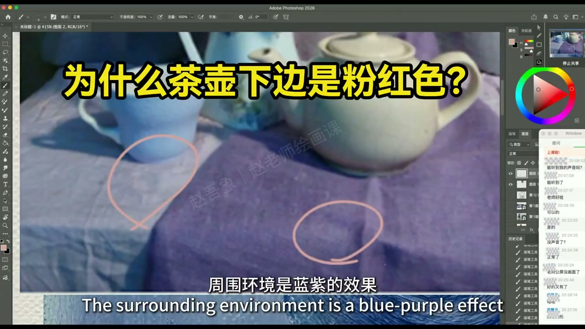
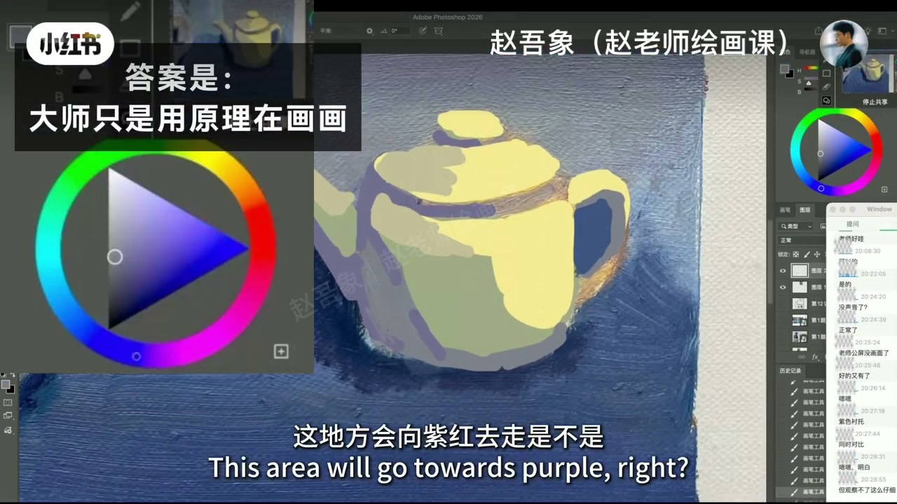
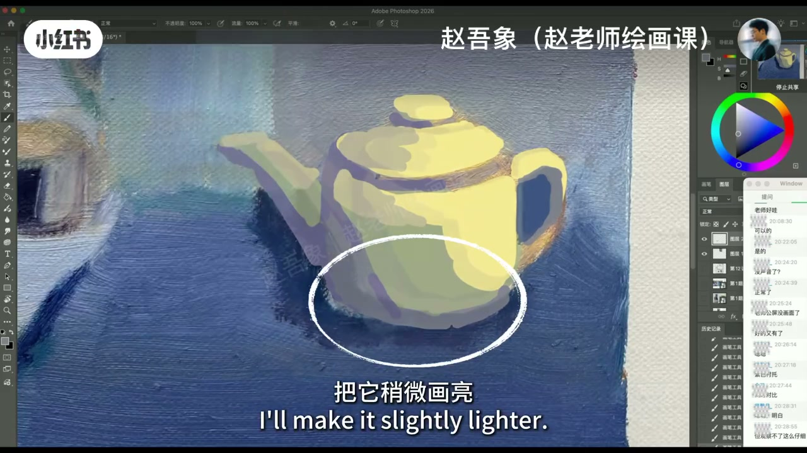
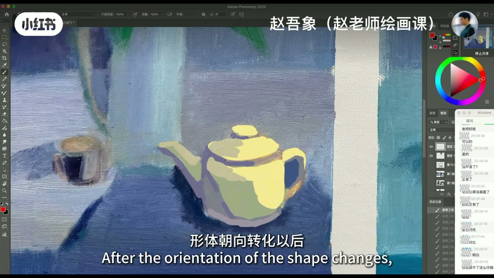

内容要点
课堂切片：蓝紫环境里茶壶底为何发红／粉？真正颜色受环境影响，最终结果是固有色与环境光的混合——偏暖固有遇上蓝紫，可感觉更亮更暖。大师并非神乎其神，只是用原理画画。演示向紫红偏移，必要时再提亮；背后是素描逻辑：面朝向哪里，颜色就怎么变——形转色变。瓶身侧面与下凹肚子是当堂指认。
知识结构
固有＋环境＝所见；蓝紫场中反光可更亮更暖。
向紫红走；不够再提明度。
朝向变则色变；瓶身侧面／肚子举证。
看不清的「怪颜色」先问朝向与环境：反光是混合结果；形转色变，用原理解比猜大师风格管用。
00:00-00:52蓝紫环境里的暖反光从哪来
作业问：周围蓝紫，为何这里发红？真正颜色受环境影响，本身颜色与环境光混合才是最终结果。本身偏暖一点，紫偏蓝紫，偏黄与紫相加，会感觉更亮更暖——一加二等于更亮更暖的颜色。
看不清颜色时别神话大师：大师只是用原理画画。00:05 粉圈标出茶壶底反光区。

00:52-01:09操作：色相先偏移，再必要时提亮
演示色彩偏移：要变暖可向紫红走，先不改明度、保持较暗；画上去若「没反应」，再把它稍微提亮，颜色就好看了。
00:55 色环落在紫红；01:05 白圈标提亮后的底缘。


01:09-01:44形转色变：朝向决定色彩
背后逻辑是素描逻辑：面朝向哪里，颜色会变化。造型课口令——形转色变：形体朝向转化以后，色彩就发生变化。这是侧面、瓶身、朝下凹进去的肚子。
画画既感性又像解密。01:20 多面色块茶壶把「朝向」画成可见结构。

完整转录（55段）
以下文本由 Whisper medium 模型自动转录，可能存在少量识别误差，已尽可能修正。
你们现在能不能理解这个地为什么变红了
这是一个特别有趣的问题
周围环境是蓝紫的效果
为什么这个地方发红了呢
谁告诉我
我们要知道一个问题是什么
真正的颜色受环境的影响
那它本身的颜色和环境光混合在一起
才是那个最终影响的结果嘛 是不是
它本身的颜色是不是发暖一点
然后这个紫呢是发蓝紫
偏黄的颜色和这个紫相加以后
等于这地方会感觉到更亮更暖
就是一和二相加起来
等于一个更亮更暖的颜色
就是说你们在画画的时候
看不清这是一个什么颜色
又会感叹于说
哎呀 为什么你看人画画好的人
那些大师啊什么的
那颜色真的是无彩般啊
觉得是大师的这什么超脱的
这样一种风格
no no no
大师根本没有神乎其神的
搞一些乱七八糟的东西
大师只是用原理来画画
来看一下色彩偏移
要变暖这地方会向紫红去走 是不是
我先不要改变明度啊
先就是比较暗
来 往紫红走啊
这画上去好像没有反应 是不是
好 那很简单
把它稍微换亮
现在来 看这个颜色好看没
这个东西背后的逻辑是素描的逻辑
就是当一个面朝向哪里的时候
它会颜色会变化
我们在造型课上会讲一个
形转色变
形体朝向转化以后
它的色彩就发生了变化
所以这变了 这是侧面
这个瓶子 这是它的瓶身 对吧
这是它的侧面 那个肚子
朝下凹进去那个肚子
能理解吧
形转色变
我想没有人比我想的更清楚
你看这多有趣啊
你就发现你画画
这是一个真的是一个感性的
但是它里面又充满了
就那种 就像解密一样